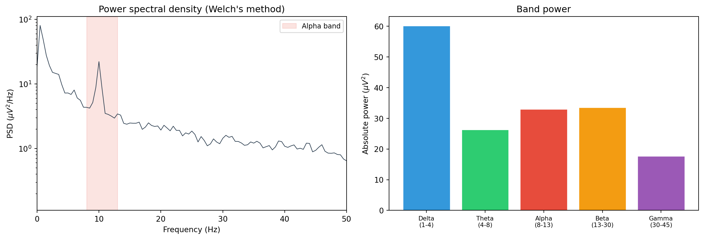

import numpy as np
from scipy.signal import welch
# Parameters
sfreq = 256 # sampling frequency in Hz
nperseg = 2 * sfreq # 2-second windows (512 samples)
# signal is a 1D numpy array of EEG voltages
freqs, psd = welch(signal, fs=sfreq, nperseg=nperseg)
# freqs: array of frequency values (Hz)
# psd: array of power spectral density values (same units as signal^2 / Hz)Power spectral density (PSD)
spectral
power
What PSD is, Welch’s method (windowing, overlap, FFT), computing PSD in MNE, plotting PSD, units (uV^2/Hz), comparing PSD between conditions or groups, and topographic PSD maps.
Why this topic matters
Much of what we want to know about EEG signals is hidden in their frequency content. Is there a strong alpha rhythm? How does beta power differ between patients and controls? Is there a peak at 10 Hz or is the spectrum flat? To answer these questions, we need a way to decompose a time-domain signal into its frequency components and measure how much power sits at each frequency. That is exactly what the power spectral density (PSD) does.
PSD is one of the most common analyses in EEG research. It appears in studies of resting-state brain activity, sleep staging, clinical diagnostics, and brain-computer interfaces. If you can compute and interpret a PSD, you can answer a wide range of research questions about the spectral characteristics of neural signals.
What PSD is
The power spectral density describes how the power (energy per unit time) of a signal is distributed across frequencies. If you record 60 seconds of EEG from electrode Oz and compute the PSD, you get a curve showing the power at each frequency from 0 Hz up to the Nyquist frequency (half the sampling rate). The unit of PSD is power per unit frequency: typically \(\mu V^2 / Hz\) for EEG data.
The PSD is related to the Fourier transform. The Fourier transform decomposes a signal into sinusoidal components at different frequencies and gives you the amplitude and phase of each component. The PSD is proportional to the squared magnitude of the Fourier transform, divided by the length of the signal. It tells you how much power is at each frequency, ignoring phase.
Formally, for a signal \(x(t)\) of length \(T\):
\[S(f) = \frac{1}{T} \left| \int_0^T x(t) \, e^{-i 2\pi f t} \, dt \right|^2\]
In practice, we do not compute this directly. Instead, we use Welch’s method, which gives a smoother, more reliable estimate.
Welch’s method
Welch’s method (Welch, 1967) is the standard approach for estimating PSD from finite-length signals. It works in three steps:
1. Divide the signal into overlapping segments
The signal is split into short, overlapping windows. For example, with a 60-second recording at 256 Hz, you might use 2-second windows (512 samples each) with 50% overlap. This means each window shares half its samples with the next window.
Overlap is important because it reduces the information lost at the edges of each window (where the windowing function tapers the signal to zero). A 50% overlap is the most common choice and works well with most window functions.
2. Apply a window function
Each segment is multiplied by a window function before computing the FFT. The default in most implementations is the Hann window, which tapers smoothly to zero at the edges. Windowing reduces spectral leakage, the phenomenon where power from one frequency “leaks” into neighbouring frequency bins because the segment does not contain an integer number of cycles.
Without windowing (i.e., using a rectangular window), sharp discontinuities at the segment edges create artefacts in the spectrum. The Hann window eliminates these discontinuities at the cost of slightly reduced frequency resolution.
3. Compute the FFT and average
For each windowed segment, compute the FFT, take the squared magnitude, and normalise. Then average all the periodograms together. This averaging is the key advantage of Welch’s method: it reduces the variance of the PSD estimate. A single periodogram from one long segment is noisy and unreliable. By averaging many shorter periodograms, the estimate becomes much smoother.
The trade-off is between frequency resolution and variance:
- Longer segments give better frequency resolution (you can distinguish frequencies that are closer together) but fewer segments to average, so the estimate is noisier.
- Shorter segments give worse frequency resolution but more segments to average, so the estimate is smoother.
A common default is nperseg = 2 * sfreq (2-second segments), which gives 0.5 Hz frequency resolution. For most EEG analyses, this is sufficient.
Computing PSD with SciPy
The welch function returns two arrays: the frequency axis and the PSD values. By default, it uses a Hann window and 50% overlap. You can change these with the window and noverlap parameters, but the defaults are appropriate for most EEG work.
Computing PSD with MNE
MNE-Python provides a higher-level interface through the compute_psd() method on Raw and Epochs objects. This method handles the details of windowing and averaging, and returns a Spectrum object with built-in plotting methods.
import mne
# Load data
raw = mne.io.read_raw_edf("recording.edf", preload=True)
raw.filter(l_freq=0.5, h_freq=45.0)
# Compute PSD using Welch's method
spectrum = raw.compute_psd(method="welch", fmin=0.5, fmax=45.0)
# Access the data
freqs = spectrum.freqs # frequency axis
psd_data = spectrum.get_data() # shape: (n_channels, n_freqs)
# Built-in plot
spectrum.plot()The compute_psd() method accepts several useful parameters:
method: “welch” (default) or “multitaper”fmin,fmax: frequency range to computen_fft: FFT length (controls zero-padding and frequency resolution)picks: which channels to include
Units: uV^2/Hz
EEG signals are typically measured in microvolts (\(\mu V\)). The PSD therefore has units of \(\mu V^2 / Hz\). This means that if you integrate the PSD over a frequency range (say, 8–13 Hz for alpha), you get the total power in that band in units of \(\mu V^2\).
When MNE computes PSD, it works internally in volts (V), so the PSD values will be in \(V^2 / Hz\). These are very small numbers (on the order of \(10^{-12}\)). To convert to \(\mu V^2 / Hz\), multiply by \(10^{12}\). Alternatively, many researchers work with log-transformed PSD (using 10 * np.log10(psd)) in decibels, which compresses the range and makes plots easier to read.
# Convert V^2/Hz to uV^2/Hz
psd_uv = psd_data * 1e12
# Or work in decibels (dB)
psd_db = 10 * np.log10(psd_data)Plotting PSD
Basic PSD plot
import matplotlib.pyplot as plt
fig, ax = plt.subplots(figsize=(8, 4))
ax.semilogy(freqs, psd, color="#2c3e50", linewidth=0.8)
ax.set_xlabel("Frequency (Hz)")
ax.set_ylabel("PSD (uV^2/Hz)")
ax.set_title("Power spectral density")
ax.set_xlim(0, 45)
plt.tight_layout()
plt.show()Using a log scale on the y-axis (semilogy) is standard practice because EEG power follows a 1/f distribution: low frequencies have much more power than high frequencies. On a linear scale, the high-frequency content would be invisible.
MNE’s built-in PSD plots
MNE provides several plotting methods through the Spectrum object:
# Standard PSD plot (all channels)
spectrum.plot()
# PSD plot averaged across channels
spectrum.plot(average=True)
# Topographic PSD map (power at each channel, shown on the scalp)
spectrum.plot_topomap()
# Topographic map for specific frequency bands
spectrum.plot_topomap(bands={"Alpha": (8, 13), "Beta": (13, 30)})Topographic PSD maps
A topographic PSD map shows how power in a given frequency band is distributed across the scalp. Each electrode position is coloured according to the power at that location, and the values are interpolated to produce a smooth map.
These maps are useful for checking whether the spatial distribution of power matches what you expect. For example, alpha power should be strongest over posterior electrodes (Oz, O1, O2, Pz). If your alpha topography shows a frontal maximum, something may be wrong (e.g., residual eye-movement artefact contaminating the alpha band).
import mne
import numpy as np
# After computing PSD
spectrum = raw.compute_psd(method="welch", fmin=1, fmax=45)
# Plot topographic maps for each standard band
bands = {
"Delta (1-4 Hz)": (1, 4),
"Theta (4-8 Hz)": (4, 8),
"Alpha (8-13 Hz)": (8, 13),
"Beta (13-30 Hz)": (13, 30),
"Gamma (30-45 Hz)": (30, 45),
}
spectrum.plot_topomap(bands=bands, normalize=True)Comparing PSD between conditions or groups
One of the most common uses of PSD is to compare spectral profiles between experimental conditions (e.g., eyes open vs eyes closed) or participant groups (e.g., patients vs controls). There are several approaches:
Overlay PSD curves
Plot the mean PSD for each condition on the same axes, with shaded areas for the standard error or confidence interval:
import numpy as np
import matplotlib.pyplot as plt
from scipy.signal import welch
sfreq = 256
# Assume condition_a and condition_b are arrays of shape (n_trials, n_samples)
# Compute PSD for each trial, then average
def compute_mean_psd(trials, sfreq):
psds = []
for trial in trials:
f, p = welch(trial, fs=sfreq, nperseg=2 * sfreq)
psds.append(p)
return f, np.array(psds)
freqs, psds_a = compute_mean_psd(condition_a, sfreq)
freqs, psds_b = compute_mean_psd(condition_b, sfreq)
fig, ax = plt.subplots(figsize=(8, 4))
mean_a = psds_a.mean(axis=0)
sem_a = psds_a.std(axis=0) / np.sqrt(len(psds_a))
ax.semilogy(freqs, mean_a, color="#2c3e50", label="Condition A")
ax.fill_between(freqs, mean_a - sem_a, mean_a + sem_a,
color="#2c3e50", alpha=0.2)
mean_b = psds_b.mean(axis=0)
sem_b = psds_b.std(axis=0) / np.sqrt(len(psds_b))
ax.semilogy(freqs, mean_b, color="#e74c3c", label="Condition B")
ax.fill_between(freqs, mean_b - sem_b, mean_b + sem_b,
color="#e74c3c", alpha=0.2)
ax.set_xlabel("Frequency (Hz)")
ax.set_ylabel("PSD (uV^2/Hz)")
ax.set_title("PSD comparison between conditions")
ax.legend()
ax.set_xlim(1, 45)
plt.tight_layout()
plt.show()Statistical comparison of band power
To test whether power in a specific band differs between groups, extract the band power for each participant (by integrating the PSD over the band) and run a statistical test:
from scipy.stats import ttest_ind
import numpy as np
# Extract alpha power (8-13 Hz) for each participant in each group
alpha_idx = np.logical_and(freqs >= 8, freqs <= 13)
alpha_group1 = np.array([np.trapz(p[alpha_idx], freqs[alpha_idx])
for p in psds_group1])
alpha_group2 = np.array([np.trapz(p[alpha_idx], freqs[alpha_idx])
for p in psds_group2])
t_stat, p_value = ttest_ind(alpha_group1, alpha_group2)
print(f"Alpha power: t = {t_stat:.3f}, p = {p_value:.4f}")Working example
The code below generates a simulated EEG signal with a clear alpha peak, computes the PSD using both SciPy and MNE, and produces a multi-panel figure.
import numpy as np
import matplotlib.pyplot as plt
from scipy.signal import welch
rng = np.random.default_rng(42)
# ── Simulate an EEG-like signal ─────────────────────────────
sfreq = 256
duration = 60 # seconds
n_samples = sfreq * duration
times = np.arange(n_samples) / sfreq
# Pink noise (1/f background)
white = rng.standard_normal(n_samples)
freqs_fft = np.fft.rfftfreq(n_samples, d=1 / sfreq)
freqs_fft[0] = 1 # avoid division by zero
pink_filter = 1 / np.sqrt(freqs_fft)
pink = np.fft.irfft(np.fft.rfft(white) * pink_filter, n=n_samples)
signal = pink * 20e-6 / pink.std() # scale to realistic EEG amplitude
# Add oscillatory components
signal += 5e-6 * np.sin(2 * np.pi * 10 * times) # strong alpha
signal += 1.5e-6 * np.sin(2 * np.pi * 6 * times) # theta
signal += 1e-6 * np.sin(2 * np.pi * 22 * times) # beta
# ── Compute PSD with Welch's method ────────────────────────
freqs, psd = welch(signal, fs=sfreq, nperseg=2 * sfreq)
# ── Extract band power ─────────────────────────────────────
bands = {
"Delta\n(1-4)": (1, 4),
"Theta\n(4-8)": (4, 8),
"Alpha\n(8-13)": (8, 13),
"Beta\n(13-30)": (13, 30),
"Gamma\n(30-45)":(30, 45),
}
band_power = {}
for name, (lo, hi) in bands.items():
idx = np.logical_and(freqs >= lo, freqs <= hi)
band_power[name] = np.trapz(psd[idx], freqs[idx])
# ── Plot ────────────────────────────────────────────────────
fig, axes = plt.subplots(1, 2, figsize=(13, 4.5))
# Left: PSD curve
ax = axes[0]
ax.semilogy(freqs, psd * 1e12, color="#2c3e50", linewidth=0.8)
ax.set_xlabel("Frequency (Hz)")
ax.set_ylabel(r"PSD ($\mu V^2$/Hz)")
ax.set_title("Power spectral density (Welch's method)")
ax.set_xlim(0, 50)
# Shade alpha band
ax.axvspan(8, 13, alpha=0.15, color="#e74c3c", label="Alpha band")
ax.legend(fontsize=9)
# Right: band power bar chart
ax = axes[1]
colours = ["#3498db", "#2ecc71", "#e74c3c", "#f39c12", "#9b59b6"]
vals = [v * 1e12 for v in band_power.values()]
ax.bar(range(len(bands)), vals, color=colours, edgecolor="white", linewidth=0.5)
ax.set_xticks(range(len(bands)))
ax.set_xticklabels(list(bands.keys()), fontsize=8)
ax.set_ylabel(r"Absolute power ($\mu V^2$)")
ax.set_title("Band power")
plt.tight_layout()
plt.show()
In the left panel, the PSD follows the characteristic 1/f slope (more power at low frequencies) with a visible peak at 10 Hz, corresponding to the alpha oscillation we added. In the right panel, alpha power is the strongest band despite the 1/f background, because we gave it a large amplitude in the simulation. In real data, whether alpha dominates depends on the participant’s state (eyes open vs closed, resting vs task).
Key takeaways
- Power spectral density (PSD) shows how power is distributed across frequencies. It is the most common spectral analysis in EEG research.
- Welch’s method estimates PSD by dividing the signal into overlapping, windowed segments, computing the FFT of each, and averaging. The key trade-off is between frequency resolution (longer segments) and estimate smoothness (more segments).
- In MNE, use
raw.compute_psd()orepochs.compute_psd()to compute PSD. The returnedSpectrumobject has built-inplot()andplot_topomap()methods. - EEG PSD units are typically \(\mu V^2 / Hz\). MNE works in \(V^2 / Hz\) internally, so multiply by \(10^{12}\) to convert. Log-transformed PSD (in dB) is useful for plotting and statistical analysis.
- To compare PSD between conditions, overlay mean PSD curves with confidence bands. To compare band power between groups, integrate the PSD over each band and run a statistical test (t-test, ANOVA).
- Topographic PSD maps show the spatial distribution of power across the scalp and are useful for checking whether spectral features have the expected topography.